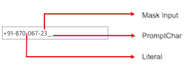

The MaskEditTextBox class is an enhanced TextBox control that supports a declarative syntax for accepting or rejecting user input. It uses the Mask property to distinguish between proper and improper user input and a validation string to perform RegEx validation.
The core features of the MaskEditTextBox control are as follows:
· Using the Mask property, you can specify the input without writing any custom validation logic in your application.
· Data binding support.
· Watermark support.
· Data validation.

Fig 133: Structure of MaskEditTextBox
Use Case Scenarios
The MaskEditTextBox control is helpful for data entry operations such as phone number, date, time, etc.
 Tables for Properties, Methods, and
Events
Tables for Properties, Methods, and
Events